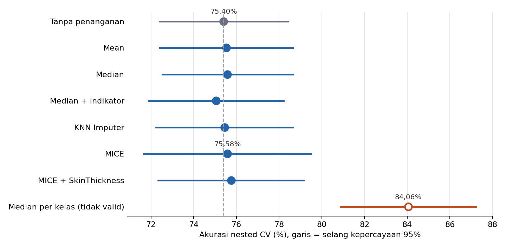

Hasil Eksperimen: Penanganan Missing Values pada KNN + Grid Search
Dataset diabetes, 767 baris (268 positif, 34.9%). Nested CV 10-fold x 3 ulangan, inner 5-fold stratified, 100 kombinasi parameter. Waktu proses 996 detik.
Data
Jumlah nilai 0: Glucose 5, BloodPressure 35, Insulin 373, BMI 11, SkinThickness 227. Baris lengkap pada empat variabel: 392.
Performa tiap skenario
| Skenario | Akurasi nested CV (%) | SD (pp) | Selisih (pp) | p | F1 | Recall | AUC | Akurasi hold-out (%) |
|---|---|---|---|---|---|---|---|---|
| Tanpa penanganan | 75,40 | 3,86 | – | – | 0,575 | 0,485 | 0,811 | 74,03 |
| Hapus baris | 75,18 | 6,23 | – | – | 0,530 | 0,438 | 0,833 | 77,22 |
| Mean | 75,54 | 4,01 | +0,14 | 0,913 | 0,594 | 0,523 | 0,823 | 70,78 |
| Median | 75,58 | 3,93 | +0,18 | 0,882 | 0,592 | 0,519 | 0,826 | 70,78 |
| Median + indikator | 75,06 | 4,06 | −0,34 | 0,718 | 0,570 | 0,490 | 0,810 | 73,38 |
| KNN Imputer | 75,45 | 4,12 | +0,05 | 0,970 | 0,600 | 0,537 | 0,826 | 74,03 |
| MICE | 75,58 | 5,04 | +0,18 | 0,903 | 0,599 | 0,529 | 0,825 | 73,38 |
| MICE + SkinThickness | 75,75 | 4,39 | +0,35 | 0,783 | 0,618 | 0,574 | 0,825 | 74,68 |
Selisih dan p dibandingkan dengan Tanpa penanganan (corrected resampled t-test). Hapus baris dihitung pada data yang berbeda sehingga tidak dibandingkan. p recall terhadap Tanpa penanganan: Mean 0,213, Median 0,278, KNN Imputer 0,028, MICE 0,154.

Grid Search
| Skenario | KNN k=5 tanpa grid (%) | Dengan grid (%) | Kenaikan dari grid (pp) | Parameter terbaik (hold-out) | Median k (nested) | Rentang k (nested) | Weights terbanyak |
|---|---|---|---|---|---|---|---|
| Tanpa penanganan | 74,06 | 75,40 | +1,34 | k=29, uniform, p=2 | 32 | 17-49 | distance (22/30) |
| Hapus baris | 75,94 | 75,18 | −0,76 | k=19, uniform, p=1 | 27 | 5-45 | uniform (23/30) |
| Mean | 73,79 | 75,54 | +1,75 | k=37, distance, p=2 | 35 | 13-49 | uniform (20/30) |
| Median | 73,66 | 75,58 | +1,92 | k=35, distance, p=2 | 29 | 13-49 | uniform (18/30) |
| Median + indikator | 73,32 | 75,06 | +1,74 | k=39, distance, p=2 | 24 | 9-49 | distance (20/30) |
| KNN Imputer | 74,48 | 75,45 | +0,96 | k=31, uniform, p=1 | 26 | 13-49 | uniform (20/30) |
| MICE | 73,62 | 75,58 | +1,96 | k=35, uniform, p=2 | 27 | 15-47 | uniform (23/30) |
| MICE + SkinThickness | 74,49 | 75,75 | +1,26 | k=41, distance, p=2 | 23 | 7-45 | uniform (20/30) |
Galat imputasi
| Metode | RMSE rata-rata | SD |
|---|---|---|
| MICE | 0,842 | 0,048 |
| KNN Imputer | 0,949 | 0,056 |
| Mean | 1,009 | 0,056 |
| Median | 1,019 | 0,063 |
Dihitung pada 392 baris lengkap, 20% nilai empat variabel disembunyikan, skala terstandardisasi.
Kenaikan semu (tidak valid)
Median per kelas Outcome sebelum pembagian data: 84,06% (+8,66 pp). Tidak valid karena memakai label data uji.
Berkas
hasil.json · tabel_performa.csv · tabel_grid_search.csv · tabel_rmse_imputasi.csv · akurasi_per_lipatan.csv · progres.txt